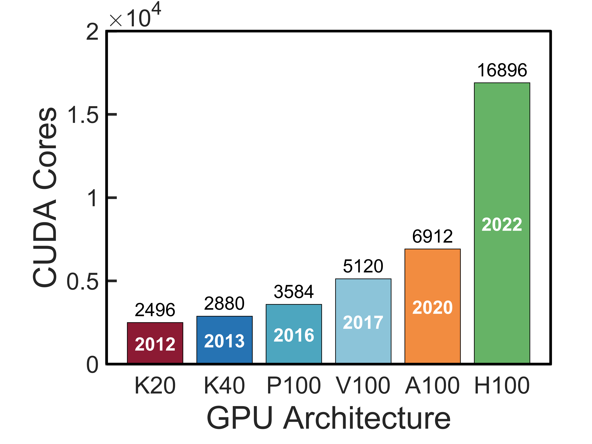
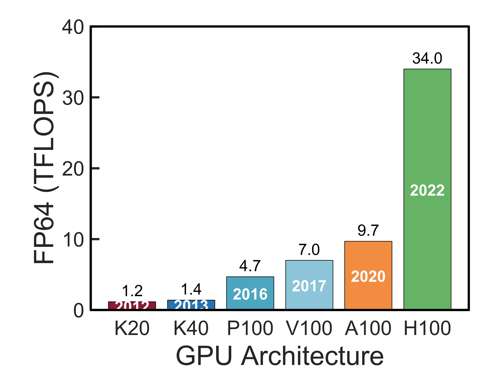
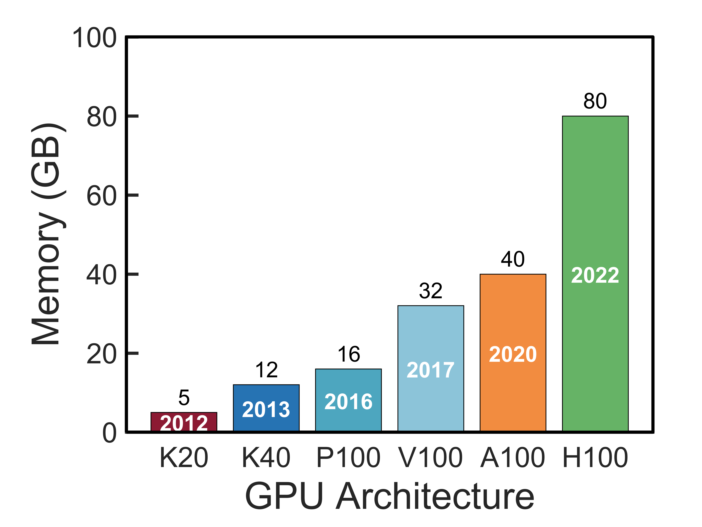
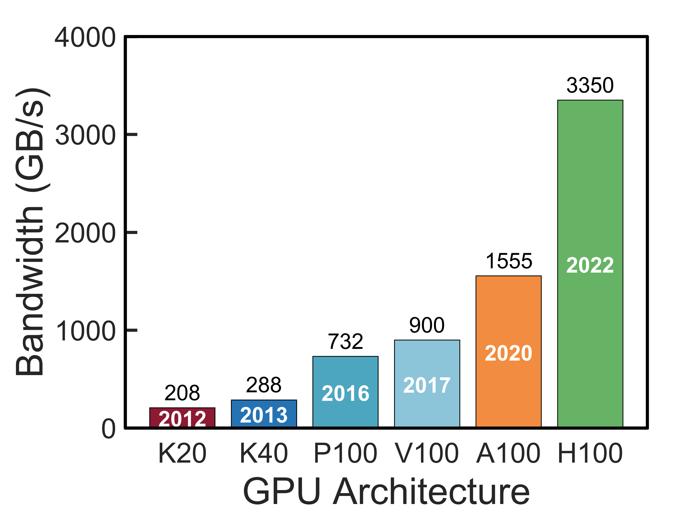

High Performance Computing (HPC) Two examples to start writing HPC code Read more... Open Multi-Processing (OpenMP) Message Passing Interface (MPI) Open Accelerators (OpenACC) Computing power of some supercomputers Tianhe-2 Titan ARCHER 17,920 nodes 18,688 nodes 4,920 nodes CPU node: 2*12 Intel Xeon E5-2692 v2 16-Core AMD 2*12-core E5-2697 v2 (Ivy Bridge) 64GB RAM 32GB RAM 64GM RAM GPU node: 2*10 Intel Xeon E5-2660 v3 + 2NVIDIA Tesla K80 GPU K20X Keplers - 256GB RAM - - Comparision of GPU Architectures Tesla K20, 2012, Number of cores: 2496, FP64: 1.17 TFLOPS, GPU Memory: 5GB, Memory Bandwith: 208 GB/s (Ref 1: https://www.nvidia.com/content/PDF/kepler/tesla-k20-active-bd-06499-001-v03.pdf) (Ref 2: https://nvidianews.nvidia.com/news/nvidia-unveils-world-s-fastest-most-efficient-accelerators-powers-world-s-no-1-supercomputer-6622729) Tesla K40, 2013, Number of cores: 2880, FB64: 1.4 TFLOPS, Memory: 12GB, Memory Bandwith: 288GB/s (Ref:https://www.nvidia.com/content/PDF/kepler/nvidia-tesla-k40.pdf) Tesla P100, 2016, Number of cores: 3584, FB64: 4.7 TFLOPS, GPU Memory: 16GB, Memory Bandwith: 732GB/s (Ref: https://www.nvidia.com/en-in/data-center/tesla-p100/) Tesla V100, 2017, Number of cores: 5120, FB64: 7 TFLOPS, GPU Memory: 32GB, Memory Bandwith: 900GB/s (Ref: https://www.nvidia.com/en-gb/data-center/tesla-v100/) Tesla A100, 2020, Number of cores: 6912, FB64: 9.7 TFLOPS, GPU Memory: 40GB, Memory Bandwith: 1555GB/s (Ref: https://www.nvidia.com/content/dam/en-zz/Solutions/Data-Center/a100/pdf/nvidia-a100-datasheet-us-nvidia-1758950-r4-web.pdf) Tesla H100, 2022, Number of cores: 16896, FB64: 34 TFLOPS, GPU Memory: 80GB, Memory Bandwith: 3.35TB/s (Ref: https://www.nvidia.com/en-us/data-center/h100/)     Heterogeneous computing platforms